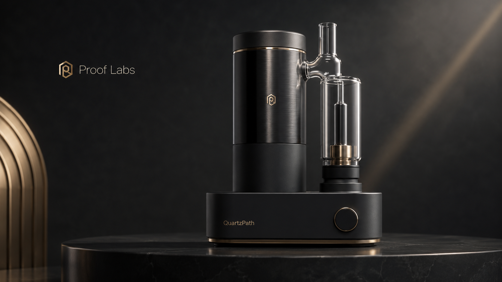
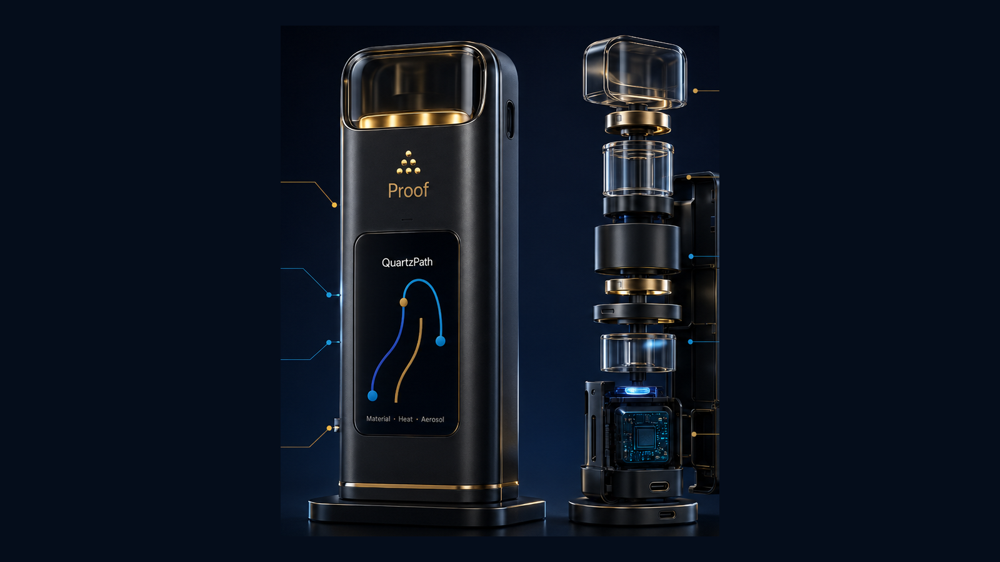

Hardware roadmap
QuartzPath is designed backward from proof.
QuartzPath is the internal codename for a proof-native hardware roadmap. This site does not disclose mechanisms, materials, geometry, supplier strategy, or patentable details.

The standard defines the hardware.
The goal is not to copy incumbent vape assumptions. The goal is to define what a vapor system must prove, learn where existing systems fail, then design hardware capable of satisfying the standard.
- Known and minimized material path.
- Stable storage and oil-contact behavior.
- Controlled thermal profile.
- Aerosol-after-storage evidence path.
- Serialized, CVA-ready system design.

Mechanism boundaryQuartzPath mechanism details remain locked until founder capture, IP counsel review, and disclosure gate support release.